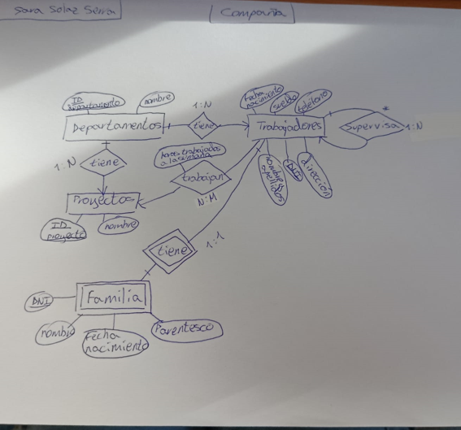

Esta galería recoge algunos de los proyectos que he realizado y los conocimientos que he adquirido.
Calculadora de presupuesto para un viaje en java
Calculadora de presupuestos para un viaje
Este proyecto consiste en desarrollar un programa en Java que solicite los datos necesarios del viaje al usuario,
realice todos los cálculos y muestre al final un resumen completo del viaje.
Aprendí a utilizar variables, constantes, operadores, entrada de datos con scanner y salida por consola con System.out.println en java.
Calculadora multifunción en java
Calculadora multifunción
Este proyecto consiste en desarrollar una calculadora que puede hacer operaciones básicas, calcular descuentos, repartir una cuenta y calcular notas
Aprendí a utilizar las estructuras condicionales if, else if y else, anidar condicionales y utilizar la estructura switch en java.
Mini robot en java
Mini robot
Este proyecto consiste en desarrollar un programa que controla los movimientos de un robot a través de la consola.
Aprendí a utilizar los bucles while, do-while, y for en java.
Instalación de una máquina virtual en virtualbox
Instalación maquina virtual
Este proyecto consiste en instalar una maquina virtual ubuntu desde virtualbox, y aprender comandos básicos de linux
Aprendí a instalar una maquina virtual ubuntu, a crear ficheros y documentos y navegar entre directorios.

Esquema Entidad-Relación base de datos de una compañía
Esquema entidad-relación compañía
Este proyecto consiste en crear un esquema entidad relación para una base de datos de una compañía.
Aprendí conceptos del modelo E-R, como relacionar las entidades, los atributos de una entidad y la cardinalidad de cada relación.
Esquema relacional base de datos de una agencia de viajes
Esquema relacional para una agencia de viajes
Este proyecto consiste en crear un esquema relacional para una base de datos de una agencia de viajes.
Aprendí a transformar relaciones complejas de un modelo entidad-relación en tablas, trabajando con jerarquías, relaciones reflexivas y ternarias.
También aprendo a definir claves primarias y foráneas y aplicar restricciones de integridad.